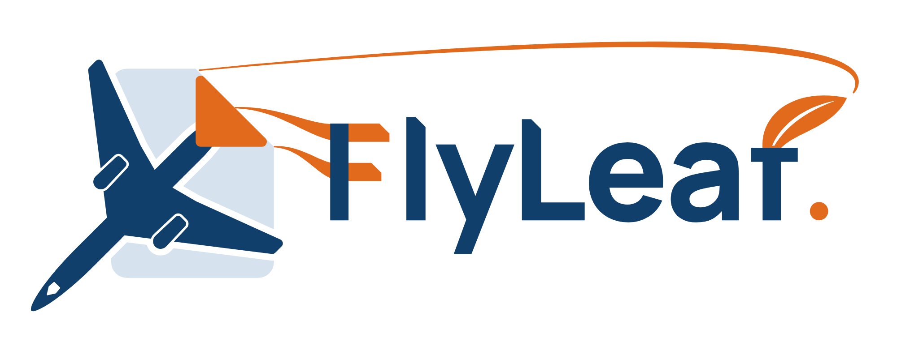
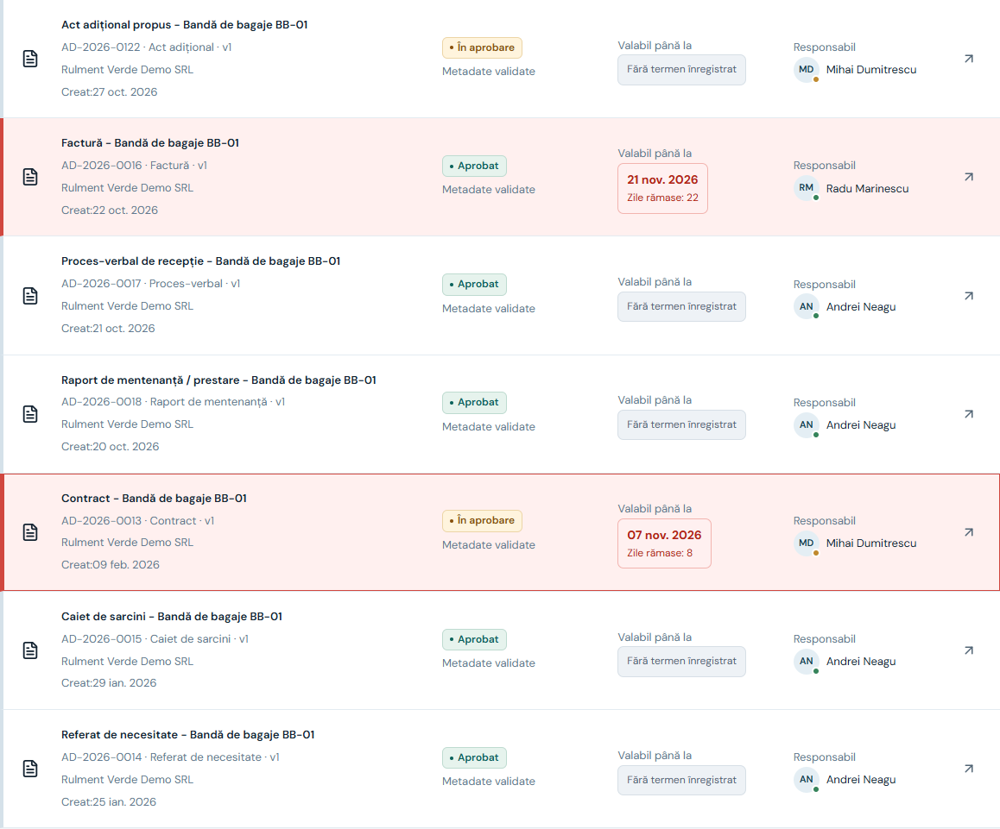
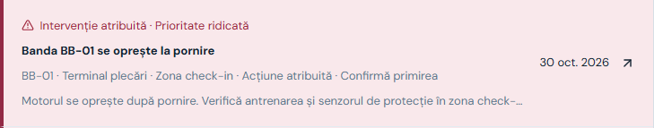
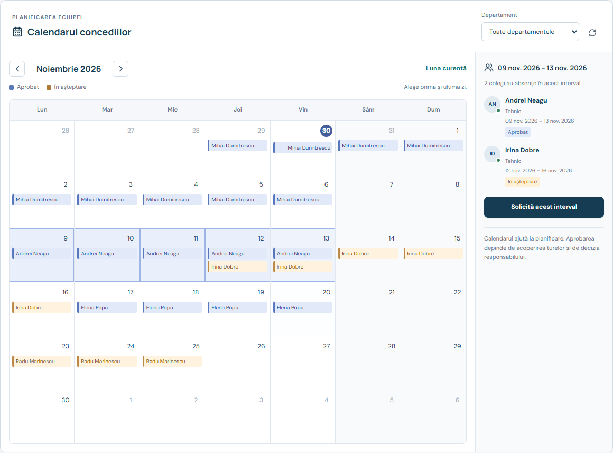
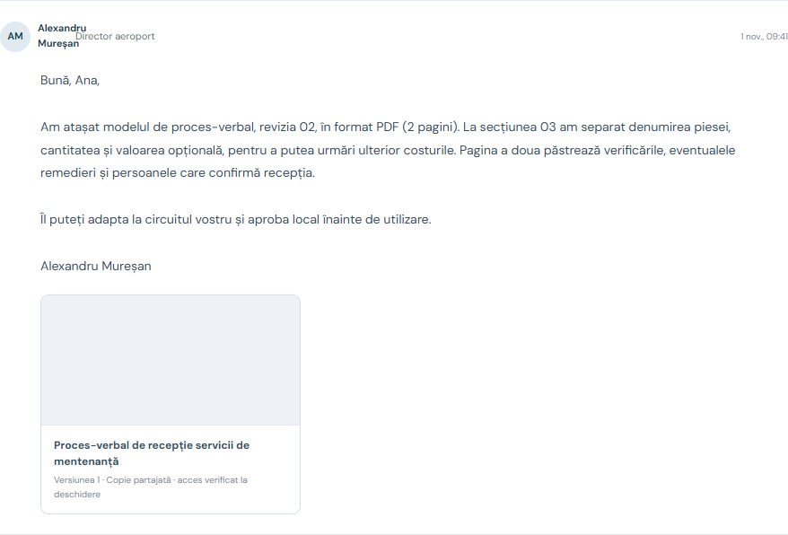

Canal și documente
Pot acoperi părți ale nevoii. În FlyLeaf, versiunea, responsabilul, starea și dovada sunt legate de obiectul de lucru.

Mai mult timp pentru ceea ce urmează.
Contracte greu de găsit.
Aprobări blocate. Responsabilități neclare.

Metadate, responsabil,
dată și valabilitate.
Sursa, versiunea
și starea aprobării.
O sarcină atribuită.
Un termen urmărit.

Selectezi operațiunea.
Vezi starea, ora și dovada.

Rol, departament,
contact și ierarhie.
Absențe aprobate
și cereri în așteptare.
Concedii și delegări
cu responsabil clar.

Aeroportul alege să participe.
Fiecare copie are acces controlat.
Pot acoperi părți ale nevoii. În FlyLeaf, versiunea, responsabilul, starea și dovada sunt legate de obiectul de lucru.
Aerosimple oferă deja documente, fluxuri, operațiuni și mentenanță. Nu revendicăm exclusivitate pentru aceste funcții.
Catalogul oficial Aerosimple ↗Fluxuri adaptate echipei, introducere graduală și un cost total justificat de rezultate măsurate în pilot.
Abonament / aeroport + configurare și integrare
Un pilot în România. Extindere prin rezultate.
Interfață RO / EN. Fluxuri adaptate local.
Căutare și filtre; metadate validate; versiuni; aprobare, semnare și arhivare; termene și reînnoiri.
Echipe responsabile; incidente; atribuire; acțiuni personale; dovezi; verificare și disponibilitate.
Pontaj NFC; registru atomic; dependențe și stări; ore planificate / efective; istoric și rapoarte.
Ierarhie și roluri; cereri de concediu și delegări; contacte între aeroporturi; mesaje și copii controlate.
Integrarea cu sistemele aeroportului, validarea procedurilor locale și exploatarea în producție se planifică în pilot.
Acces după rol, departament și atribuirea sarcinii. Permisiunile se verifică în API.
Activare de către director. Contacte autorizate. Copii selectate, revizuite și partajate explicit.
Versiune, persoană, acțiune și moment. Verificarea unei lucrări este separată de executare.
VPN-ul protejează conexiunea. Permisiunile și selecția conținutului controlează ceea ce ajunge la partener.